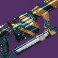
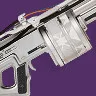
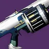

评级说明
配套视频：【命运 2】购物清单 紫枪部分杂谈
在不同场景下，不同武器的推荐分级会出现变化。主要区分场景：高难宗师、副本清怪／机制、副本输出。伤害 DPS 参考武器框架页。
T0：无替代性，独一档
T1：强力，不错的选择
T2：能用
T3：一般
T4：不建议使用
为了更精细化评级，会出现 T0.5／T1.5 的小数点评级。评级只是为了提供衡量强度的标准，请勿上纲上线。不会出现 PVP 枪，不会出现基本没有用途的枪。
如何衡量一把武器的价值？
清怪／高难宗师等：
①武器形态优秀，对精准伤害要求不高
②武器伤害合格
③武器弹药经济优秀：弹药生成属性高，每盒弹药总伤高
④功能性：技能回转（超凡／大招），硬减软减获取，高频率 dot，辅助队友（奶枪／切割／疲惫）……
输出：
①伤害高：DPS 高，切换 DPS 高
②总伤高
③爆发高
④功能性：劫子弹，高频率 dot，技能回转……
冲击支撑如果不带神器废墟石板的不稳定神枪手和 NPA 的不稳定流动，则一定要和不稳定弹药 Perk 搭配。面对怪的 DPS 从高到低：手枪、手炮、自动步枪／脉冲／弓箭、斥候、微冲。在有 vog 套的情况下比起羸弱能量球会更倾向带增伤 Perk。
动能武器：如果不反感 pve 打精准的话，可以尝试萤火虫+墓碑，萤火虫可以自动碎掉墓碑的冰块造成高伤范围爆炸，而萤火虫又是火属性武器伤害，就实现了一把枪触发预言 4 的抵抗 3 效果和回复 16% 近战手雷能量，携带药剂师或女王香炉的迎接风暴还可以同时射出减速弹片，也可利用寒风凛凛获取冰霜护甲。
通常动能和虚空是最佳的清怪传说白弹：虚空因为不稳定弹药给予的清怪能力，冲击支撑给予的生存能力，动能因为羸弱能量球+动能震颤和天生的对非战斗人员有天生的 15% 增伤。
重弹狙
类型评级 T0。配合加密数据盘，翻新 A499 就是最无脑的 T0 精准输出武器，总伤/每盒弹药总伤都是相当不错，剑狙双切的 DPS 会进一步提升（尖塔套更高），搭配动能合成边打边劫总伤也趋近无限，在高难中也是非常优秀的武器
| 武器 | 图标 | 评级 | 框架 射速 |
属性 | 勇士 | Perk 三号位 | Perk 四号位 | 获取地点 | DPS | 总伤 | 切换 DPS | 备注 | 评级理由 |
|---|---|---|---|---|---|---|---|---|---|---|---|---|---|
| 翻新 A499 | 干扰武器 72 | 动能 |
火箭筒
类型评级 T0。最优秀的非精准输出武器，在高难中也可使用，DPS 顶级，总伤/每盒弹药总伤适中，有不错的神器搭配，要注意虽然各个框架间备弹量有所不同，但是拾取的强化弹药量是一致的都为 3 发。高难中三号位通常选择自填重建或为松身裤选择集束炸弹等双增伤，vog4 爆炸光能被视为好用的增伤
狼群弹药对筒子的增幅大约在 26% 左右
持久印象对筒子的增伤大约在 27% 左右
集束炸弹对筒子的增伤大约在 25% 左右（即使是常规体型）
注：持久印象和爆炸光能都无法让狼群弹药和集束炸弹吃到增伤
双脚架偶尔可以用过机制中补充子弹，但如今不缺重弹的环境很少使用
| 武器 | 图标 | 评级 | 框架 射速 |
属性 | 勇士 | Perk 三号位 | Perk 四号位 | 获取地点 | DPS | 总伤 | 切换 DPS | 备注 | 评级理由 |
|---|---|---|---|---|---|---|---|---|---|---|---|---|---|
| 攻击 T0：最高的单发伤害（1.1），最高的射速和换弹，9 发备弹但是最高的每盒弹药总伤，拥有最强的输出筒子光芒复仇 | |||||||||||||
| 光芒复仇 | 攻击型框架 25 | 烈日 | |||||||||||
| 异教徒 | 攻击型框架 25 | 电弧 | |||||||||||
| 无效安慰 | 攻击型框架 25 | 冰影 | |||||||||||
| 恶兆 | 攻击型框架 25 | 虚空 | |||||||||||
| 核心星辰 IV | 攻击型框架 25 | 缚丝 | |||||||||||
| 适配 T0：最高的单发伤害，适中的操控和射速，9 发备弹但是最高的每盒弹药总伤，拥有众多优秀 perk 池的筒子，高难反屏障常客之一，为了增加反屏障容错通常选择重建，由于 vog4 在高难偏向使用爆炸光能，棱镜可用元素磨砺 | |||||||||||||
| 轰鸣巨人 | 适配框架 25 | 虚空 | |||||||||||
| 注视焦点 | 适配框架 25 | 缚丝 | |||||||||||
| 热血上头 | 适配框架 25 | 电弧 | |||||||||||
| 何时何地 | 适配框架 25 | 冰影 | |||||||||||
| 红鲱鱼 | 适配框架 25 | 虚空 | |||||||||||
| 巅峰捕食者 | 适配框架 25 | 烈日 | |||||||||||
| 高冲 T1：最高的总伤和爆炸范围和操作，11 发备弹，适中的单发伤害（1.0），打三切的切换 DPS 可以追平攻击适配的 DPS，但是如今三切没有太多使用空间，也没有特别合适的嫉妒军械库 perk 池发挥 | |||||||||||||
| 熊啸 | 高冲击力框架 25 | 烈日 | |||||||||||
| 海鹰 | 高冲击力框架 25 | 缚丝 | |||||||||||
| 明日回答 | 高冲击力框架 25 | 虚空 | |||||||||||
| 无眠 | 高冲击力框架 25 | 电弧 | |||||||||||
| 精密 T2：11 发备弹，最低的单发伤害（0.95）和射速，除了有追踪效果之外是其他三个框架的全方面下位 | |||||||||||||
| 低温重炮 | 精密框架 25 | 电弧 | |||||||||||
| 火山洪流 | 精密框架 25 | 烈日 | |||||||||||
| 权势 | 精密框架 25 | 烈日 | |||||||||||
刀剑
类型评级 T0。紫刀剑绝大部分作用是用作急切赶路，在高难中还会承担反屏障的角色，输出的 DPS 和总伤/每盒弹药总伤优秀，但是近战伤害手段会更多倾向于喷子狼毒星界之火等，刀剑没有弹药生成属性，胸部弹药生成属性不生效，弹药进度接近 0 弹药生成水平
| 武器 | 图标 | 评级 | 框架 射速 |
属性 | 勇士 | Perk 三号位 | Perk 四号位 | 获取地点 | DPS | 总伤 | 切换 DPS | 备注 | 评级理由 |
|---|---|---|---|---|---|---|---|---|---|---|---|---|---|
| 轻质 T0：最好的常态急切框架，所有框架中轻击急切最远的刀剑，也是真正能被使用的 DPS 最高的框架 | |||||||||||||
| 阴沉利爪 | 轻质框架 | 虚空 | |||||||||||
| 三色矛头蝮-4bl | 轻质框架 | 烈日 | |||||||||||
| 纳斯尔丁 | 轻质框架 | 电弧 | |||||||||||
| 涡流 T0：因为最远的右键距离成为最好的超级跳急切框架，输出适合切枪打法，而不是一直抱着砍。多排 perk 急切可以配合圣贤 4 碎冰触发利刃专注实现超远距离超级跳，具体为先选择其他 perk 带忠诚面具碎冰触发利刃专注，再把 perk 切到急切和踢踏 5，这样就可以保留急切刀锋进行超级跳了。 | |||||||||||||
| 急锋 | 涡流框架 | 冰影 | |||||||||||
| 陨落铡刀 | 涡流框架 | 虚空 | |||||||||||
| 虚假偶像 | 涡流框架 | 烈日 | |||||||||||
| 拜拜咯 | 涡流框架 | 缚丝 | |||||||||||
| 铸造 T0：在高难中，他是最常见最好用的反屏障武器，本身也有不错的功能性和超凡效率 | |||||||||||||
| 骑士之火 | 铸造者框架 | 虚空 | |||||||||||
| 拜龙教镰刀 | 铸造者框架 | 缚丝 | |||||||||||
| 暗夜恐惧 | 铸造者框架 | 电弧 | |||||||||||
| 孤空伤痕 | 铸造者框架 | 烈日 | |||||||||||
| 噩兆 | 铸造者框架 | 冰影 | |||||||||||
| 波形 T1：最好的清怪模型，输出虽然理论不错但是容易丢伤害并且多人伤害叠加有问题 | |||||||||||||
| 毒鲉 | 波形刀剑框架 | 烈日 | |||||||||||
| 至善 | 波形刀剑框架 | 电弧 | |||||||||||
| 深渊之刃 | 波形刀剑框架 | 缚丝 | |||||||||||
| 适配 T1.5：没有突出优点的框架，遗赠比其他的适配刀伤害天生高 | |||||||||||||
| 遗赠 | 适配框架 | 电弧 | |||||||||||
| 强硬切割 | 适配框架 | 电弧 | |||||||||||
| 另一半 | 适配框架 | 虚空 | |||||||||||
| 静待回归 | 适配框架 | 烈日 | |||||||||||
| 和风 | 适配框架 | 冰影 | |||||||||||
| 攻击 T1.5：夸张的双增伤让其成为理论最高 DPS 的紫刀剑，但是没有太多实战使用 | |||||||||||||
| 永世英雄 | 攻击型框架 | 电弧 | |||||||||||
| 史赛克的老练 | 攻击型框架 | 虚空 | |||||||||||
线融
类型评级 T1.5。除了总伤比翻新 A499 略高，DPS 差了相当多，但因为动能合成的存在直接消除了总伤差距，，这意味着线融只能在方便打精准的时候使用，在多人情况下可以说是翻新的全方面下位。或许只有在队伍中几乎无法施加易伤手段、聚合充能叠层并不理想并且是长轴时才适合上场（粒子解构）；单人 solo 的情况下，使用精准工具的揭纱露眼/聚焦狂怒的灾变会略优于翻新，因为单人情况下的易伤、聚合充能层数施加没有多人方便，而且单人情况下的粒子解构可以一直回复弹匣子弹，大幅减少了填装次数也就提高了 DPS，揭纱露眼对于泰坦单人内容是最优秀的精准伤害武器之一。粒子解构是施加在战斗人员身上的易伤，不与其他易伤叠加
| 武器 | 图标 | 评级 | 框架 射速 |
属性 | 勇士 | Perk 三号位 | Perk 四号位 | 获取地点 | DPS | 总伤 | 切换 DPS | 备注 | 评级理由 |
|---|---|---|---|---|---|---|---|---|---|---|---|---|---|
| 精密 T1.5：DPS 比适配点射略高，总伤几乎是适配点射的双倍 | |||||||||||||
| 揭纱露眼 | 精密框架 | 虚空 | |||||||||||
| 灾变 | 精密框架 | 烈日 | |||||||||||
| 适配点射 T2.5：全方面劣势于精密框架，特殊用法偶尔有可取之处 | |||||||||||||
| 蔷薇的蔑视 | 适配点射 | 烈日 | |||||||||||
| 风暴猎人 | 适配点射 | 电弧 | |||||||||||
重型弩箭
类型评级 T2。有接近筒子的不错切换 DPS，好奇之器银白弩箭的增伤，但是由于缺乏优秀的 perk 池或者对应属性并且需要打精准，只有好建议真正有全游戏最高输出之一的 DPS 使用场景
| 武器 | 图标 | 评级 | 框架 射速 |
属性 | 勇士 | Perk 三号位 | Perk 四号位 | 获取地点 | DPS | 总伤 | 切换 DPS | 备注 | 评级理由 |
|---|---|---|---|---|---|---|---|---|---|---|---|---|---|
| 好建议 | 高冲击力框架 30 | 虚空 | |||||||||||
| 沉没 | 高冲击力框架 30 | 冰影 |
榴弹
类型评级 T2.5。惨不忍睹的总伤和每盒弹药总伤，勉勉强强的 DPS，没有专属增伤神器，只有药剂包电弧复合不祥之兆可以利用，所以电榴弹将是主要的推荐对象，但是电飞蛾的索敌也存在问题。级联点的双增伤爆发用处也极其有限，速射框架在 DPS 以极小的差距优于其他两个框架，总伤略低于其他两个框架，在每盒弹药总伤上由于都拾取 5 发弹药适配和波形要更优秀
可以说动能冲击、突破清场、电弧复合是榴弹的主要增伤神器
拓展深渊在有 15 易伤时也有一定的性价比
电弧致盲生效时间为 10 秒
vog4 配合爆炸光能适配榴弹，队友越多越好，爆炸光能的实际增伤接近 50%
| 武器 | 图标 | 评级 | 框架 射速 |
属性 | 勇士 | Perk 三号位 | Perk 四号位 | 获取地点 | DPS | 总伤 | 切换 DPS | 备注 | 评级理由 |
|---|---|---|---|---|---|---|---|---|---|---|---|---|---|
| 咒骂 | 速射框架 150 | 电弧 | |||||||||||
| 末日 | 适配框架 120 | 电弧 | |||||||||||
| 喧嚣 | 压缩波形框架 120 | 电弧 | |||||||||||
| 边缘交通 |  | 适配框架 120 | 虚空 | ||||||||||
| VS 寒冷抑制 |  | 速射框架 150 | 冰影 | ||||||||||
| 爱与死亡 | 压缩波形框架 120 | 烈日 | |||||||||||
| 科拉西斯的苦恼 | 速射框架 150 | 缚丝 | |||||||||||
| 永存者 |  | 速射框架 150 | 缚丝 |
机枪
类型评级 T3。机枪的总伤极高但是 DPS 极低，比绿弹还低，清怪也轮不上他，是真正意义上没有任何用处的武器，框架之间的平衡不错：DPS：速射＞攻击＞适配＞高冲＞热能。总伤：高冲＞适配＞攻击＞速射＞热能。每盒弹药总伤：高冲＞热能＞适配＞攻击＞速射。因此清怪的优选是攻击、适配、高冲，而攻击和适配又因为手感优秀被更多人使用。个人认为击杀记录并不是特别优秀的 perk
参考数值：DPS 2533 · 总伤 243302
| 武器 | 图标 | 评级 | 框架 射速 |
属性 | 勇士 | Perk 三号位 | Perk 四号位 | 获取地点 | DPS | 总伤 | 切换 DPS | 备注 | 评级理由 |
|---|---|---|---|---|---|---|---|---|---|---|---|---|---|
| 惩戒措施 | 攻击型框架 600 | 虚空 | |||||||||||
| 锤头 | 适配框架 450 | 虚空 | |||||||||||
| 环形逻辑 | 适配框架 450 | 缚丝 | |||||||||||
| 专业记忆 | 攻击型框架 600 | 缚丝 | |||||||||||
| 忠于职守 | 适配框架 450 | 烈日 | |||||||||||
| 远方黎明 | 攻击型框架 600 | 烈日 |